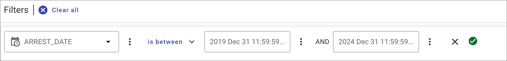
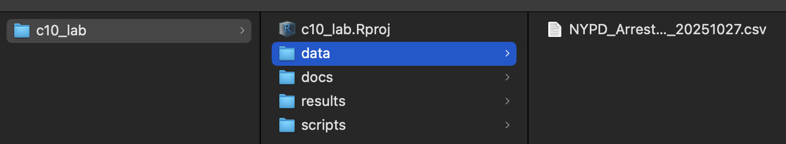

Class 10 Lab: Correlation in R
Fall 2025 | Instructor: Stephen Metts | PGUD 5160 - CRN 2247
Preamble
In this tenth demonstration lab, we will continue to repeat the project setup phase of previous weeks (setting the working directory to c10_lab).
While we will continue to use tidyverse for the main body of the data manipulation, we will also use base r functions for correlation as well as the tidyverse built-in functions known as corrr.
This lab can and should be used in conjunction with this week’s assignment 10 deliverable - Assignment 10.
Data
To start, we will utilize NYPD Arrest Data - Historic from the OpenNYC platform. We first subset this large data set to just 5 years between 2019 December 31st and 2024 December 31st; this returns 973069 arrests:
Our query to return 973,069 unique arrest events as follows:
- Arrest Date is between
2020 Jan 01and2025 Oct 01

For c10_lab, we will download a prepared data directory that has all necessary data for both this week’s lab as well as assignment:
This data subdirectory will be in .zip format; make sure to uncompress the directory before engaging it with this week’s lab script. Further, change the name from lab_10_data-subdirectory to simply data and place it into your c10_lab directory.
Lab Setup - Part I and II
Step 1: Project Management in RStudio for c10_lab (also applicable for assignment_10)
As we have done for previous labs, we will create a c10_lab project directory:

A well-organized folder structure within an RStudio project is crucial. Common conventions include:
data/: For raw data (treated as read-only).
docs/: For documentation or R Markdown files.
results/: For outputs and generated results.
scripts/: For R scripts and analysis pipelines.
Step 2:
With the c10_lab.Rproj established and the subdirectories for our data analyses established, we can print both the working directory and all the paths and files therein:
Your ‘upstream’ path will likely be different than Users/x15… if you are using macOS, your full path would be akin to /Users/your_machine_name/Desktop/c10_lab. On macOS, this can also be expressed as ~/Desktop/c10_lab:
The tilde ~ is a special character that acts as a shortcut for the current user’s home directory.
This is fine; we want to simply make sure that the directory we created - c10_lab is indeed the directory in which and from which we are and will be working.
Step 3:
For this week’s lab, utilize the following script in conjunction with the previous data subdirectory download.
Class 10 Correlation lab script
Open the script from the scripts subdirectory: File>Open File>c10_lab>scripts>c10_lab10-script-1.R
Lab 10 | Part I — Correlation and Seasonality: NYPD Arrests by Month + Season
This lab part I examines the relationship between time (month) and arrest volume in New York City using the NYPD Arrests Historic dataset (2019–2024).
We explore whether arrests show a linear or monotonic seasonal trend through correlation analysis and visualization.
🧭 Workflow Steps
1️⃣ Load and Inspect Data
- Import the NYPD Arrest dataset (
read_csv()). - Check structure (
glimpse()) to confirm date and variable formatting.
2️⃣ Prepare Temporal Variables
- Convert the
ARREST_DATEcolumn to a date type vialubridate(mdy()). - Extract:
- month number (1–12)
- month label (“Jan”, “Feb”, …)
- season (Winter, Spring, Summer, Fall)
This creates a time variable suitable for trend and correlation analysis.
3️⃣ Aggregate by Month
- Count total arrests per month using
count(). - Output: a simple 12-row table (one row per month).
4️⃣ Visualize Monthly Pattern
- Plot arrests by month using a line + point chart.
- This shows any visible seasonal variation or peaks.
5️⃣ Compute Correlations
- Pearson’s r → tests for a linear relationship (month number vs. arrests).
- Spearman’s ρ → tests for a monotonic (rank-based) trend.
- Results are printed along with:
- p-values (significance)
- 95% confidence interval for Pearson’s r
6️⃣ Correlation Matrices and Plots
- Create a small correlation matrix (month_num vs. arrests) for both Pearson and Spearman.
- Visualize with
ggcorrplot()to reinforce concept of “matrix correlation.”
7️⃣ Aggregate by Season
- Group months into four seasons.
- Plot total arrests per season as a bar chart.
- This highlights seasonality visually, even if correlations are weak.
📊 Summary of Results
| Statistic | Value | Interpretation |
|---|---|---|
| Pearson’s r | 0.091 | Very weak positive linear association between month number and arrests. |
| 95% CI | [-0.509 , 0.632] | The true correlation could range from moderately negative to moderately positive. |
| p-value | 0.778 | Not statistically significant — we fail to reject H₀ (no correlation). |
| Spearman’s ρ | –0.056 | Weak, slightly negative rank correlation; also non-significant (p = 0.863). |
🧩 Interpretation
- Both correlations are near zero, suggesting no clear linear or monotonic trend in arrests across the calendar year.
- The large confidence interval shows that with only 12 observations (months), the estimate is imprecise.
- p-values > 0.05 mean the observed variation could easily arise by chance.
- Visually, arrests may fluctuate seasonally (small bumps or dips), but not in a consistent up-or-down pattern.
⚖️ Discussion Points
- Why might arrests not follow a strict month-to-month trend?
(e.g., policy shifts, reporting changes, or specific events) - How could we better capture seasonality?
- Compare by season categories rather than month number.
- Correlate arrests with temperature or population density data.
- Compare by season categories rather than month number.
- What limitations come from using only 12 data points for correlation?
- Does spatial autocorrelation influence these temporal findings?
✅ Key Takeaway
The correlation between month and arrests in NYC (2019–2024) is weak and not statistically significant.
Seasonal variation exists, but it’s not captured well by a simple linear or monotonic correlation with month number.
Understanding arrest patterns likely requires more complex modeling (seasonal cycles, policy effects, or spatial factors).
Lab 10 | Part II — Correlation and Seasonality: Focus on Seasonality via ANOVA approach
Anova Definition:
ANOVA (Analysis of Variance) is a statistical test that determines if there are significant differences between the means of three or more independent groups. It works by comparing the amount of variance between groups to the amount of variance within groups to determine if the groups are statistically different. The test is used when you have one categorical independent variable (called a “factor”) and a continuous dependent variable.
🧭 Workflow Steps
Goal: Instead of correlating numeric month values, test whether mean arrests differ significantly between the 4 seasonal groups. We’ll use the original cleaned data
ar_cleanso that each arrest event contributes to its season, not just aggregated totals.
1️⃣ Create a season-level summary (mean arrests per day, to normalize slightly)
2️⃣ Check data distribution visually (include outlier analysis)
3️⃣ Parametric test — One-way ANOVA
4️⃣⃣ Interpretation:
- If ANOVA p < 0.05 → significant seasonal difference.
- If not, arrests vary slightly but not systematically by season.
🔹 ANOVA Breakdown
| Term | Definition | Key Value from Output | Interpretation |
|---|---|---|---|
| Df (Degrees of Freedom) | Number of independent sources of variation. | Season = 3, Residuals = 1823 | Four seasons → 3 df for between-group variation; 1823 df for within-group (daily) variation. |
| Sum Sq (Sum of Squares) | Total variability attributed to each source. | Season = 214,444; Residuals = 57,715,577 | Most variability is within seasons, not between them. |
| Mean Sq (Mean Squares) | Average variance per degree of freedom. | Season = 71,481; Residuals = 31,660 | Used to compute the F-statistic. |
| F value | Ratio of between-group to within-group variance. | F = 2.258 | If F is large, group means differ more than expected by chance. |
| Pr(>F) | p-value testing if all group means are equal. | p = 0.0799 | About 8% chance that observed variation is random → not significant at 0.05, but marginal. |
| Significance code ( . ) | Symbol marking significance level. | “.” (dot) | Indicates marginal significance (p < 0.1 but > 0.05). |
| Conclusion | — | — | Weak evidence that arrest means differ by season; variation mostly due to daily noise. |
🔹 ANOVA Summary
A one-way ANOVA was conducted to compare the mean number of daily arrests across the four seasons (Winter, Spring, Summer, Fall).
Results showed a modest difference between group means — F(3, 1823) = 2.26, p = 0.0799 — indicating that while seasonal variation exists, it is not statistically significant at the conventional 0.05 level.
In practical terms, this implies that while arrests may rise slightly during certain seasons (e.g., summer), the fluctuations are small relative to day-to-day variation and could plausibly be due to chance.
🧾 Key Points — Why the Lab Results Differ from the Usual Summer Crime Narrative
The lab’s finding of “no significant seasonal difference” doesn’t mean the ‘summer effect’ isn’t real — it means it’s not strongly visible in this aggregated arrest dataset under these years and these modeling choices.
The previous analysis is still correct and valuable — it demonstrates how:
Method, time frame, and variable choice all affect statistical outcomes.
The story you get depends on what you measure (arrests vs. crimes) and how you aggregate (daily vs. seasonal).
| Factor | Effect on Pattern | How to Check or Extend Analysis |
|---|---|---|
| Arrests ≠ Crimes Reported | Arrests depend on enforcement and policy, not just incident rates. | Compare to NYPD CompStat or 911 complaint data to see crime incidents directly. |
| Aggregation by Season | Grouping into four broad seasons smooths short, sharp summer peaks. | Replot by month or week to capture more granular fluctuations. |
| Pandemic & Policy Periods (2019–2024) | COVID-19, protests, and bail reform disrupted normal cycles. | Split the dataset pre- and post-2020 to test for structural breaks. |
| Mixed Offense Types | Offenses vary differently by season; combining them cancels trends. | Filter or facet by offense category (e.g., assault, theft, drug possession). |
| High Day-to-Day Noise | Random fluctuations obscure subtle seasonal signals. | Apply moving averages or model with smoothing (e.g., geom_smooth(), LOESS). |
| Changes in Policing Strategy | Shifts in enforcement priorities flatten earlier seasonal variation. | Examine arrest type proportions or policy timelines. |
| Statistical Scale & Power | Seasonal differences are small relative to total variance. | Quantify effect size (η²) and discuss practical vs. statistical significance. |
In summary: The lab’s finding of no significant seasonal effect doesn’t mean NYC lacks a summer pattern — it means that within this dataset, period, and aggregation level, the evidence for it is statistically weak. Context and scale matter as much as the calculation.
Assignment 10 Link:
Scripts & Lab Data:
Class 10 Lab 10 R Script #1 - open in your RStudio
scriptsFile>Open File>c10_lab>scripts>c10_lab10-script-1.R